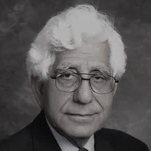

Education
MBBS, FCPS (Urology), FRCS (Ed.), FRCP, PhD
Renal Surgeon, Urologist
Experience
44 Years
Syed Adeebul Hasan Rizvi is a Pakistani philanthropist, doctor, Renal transplant
surgeon and founder of the Sindh Institute of Urology and Transplantation,
the largest kidney transplant centre in Pakistan.
This institute is affiliated with the nearby Civil Hospital, Karachi.
Rich tributes were paid to Director Sindh Institute of Urology and Transplantation (SIUT),
Prof. Dr. Adib Rizvi on becoming the first Pakistani surgeon to receive the prestigious
honorary membership of the British Association of Urological Surgeons (BAUS)
at a ceremony held here.
The Sindh Institute of Urology & Transplantation is a dialysis & kidney transplant
centre located in Pakistan. SIUT was founded by Dr. Adibul Hasan Rizvi and it is Pakistan's
largest kidney disease center, as well as Pakistan's largest public sector health organisation.
Services
Awards and Recognitions
Recipient of Magsaysay Award, and lots of respect and praise from patients,
community and all stakeholders in the society, Dr Rizvi is a pioneer in treating kidney
related diseases in Pakistan. He started off very humbly by just a ward in the Civil Hospital Karachi
where he treated kidney patients. This 8 bedded ward was established in 1971 and today it has grown
into a full-fledged institution called SIUT (Sindh Institute of Urology and Transplantation).
Dr Rizvi worked day and night for decades and has come a long way in developing his institute as
a leading urology and transplantation facility in this region. He and his team have worked with dedication
to provide complete medical care from treatment to medicine, surgery and post-treatment care complete
free of cost. They have a history of treating the elite in the society and have asked for their support
in return for their services. Such is the dedication of this amazing Pakistani that despite all the odds
against him, he has been able to provide best medical care to the poor and deserving.
Dr Adeeb Rizvi is recipient of many awards, locally and internationally. His biography and citation for
the Magsaysay Award details his inspirational journey and can be see here:
Dr Rizvi's Biography
Find more about SIUT here!